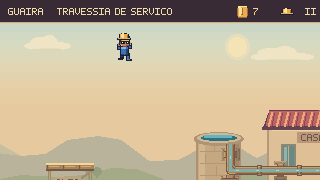
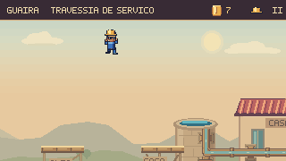
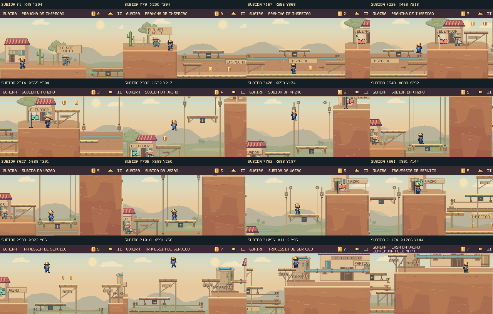

Rodada seguinte: um caminho pelos telhados da Subida →
Ver o caminho.
Entender o desafio.
Revisão das oito cenas pela perspectiva de quem joga: cinco etapas da jornada, uma abertura alternativa e duas oficinas opcionais. A conferência acompanha os percursos completos, a leitura dos mecanismos, as escolhas de exploração e a continuidade entre as fases.
Quatro correções na leitura do jogo


O salto do mirante perdia a margem de chegada no ponto mais alto. A Casa agora recebe uma sacada na mesma altura do mirante, com apoio real e mãos-francesas ligadas ao terraço. A chegada permanece visível; um salto curto ainda pode ser recuperado pelo degrau inferior.
Mesmo instante e mesmos comandos nas duas versões, desde a entrada da fase. Quadros do renderizador de produção, com física e câmera nativas. As mudanças de geometria podem alterar a trajetória.
A informação acompanha a ação
Pátio e Prefeito usam as duas linhas do HUD, como Ossabravo. Os avisos permanecem disponíveis sem ocupar a área dos saltos, dos apoios e dos ataques. No Pátio, a câmera também conserva a margem oposta do vão.
Cada conclusão aponta uma continuação
O arrozal encaminha aos Respiros, o curral a Ossabravo, e a Subida ao confronto da Casa da Vazão. A mensagem acompanha o progresso real do capítulo; repetir uma fase anterior preserva o contexto já conquistado.
Oito percursos completos
Selecione uma cena para acompanhar a partida e o papel dela no capítulo. As gravações incluem esperas e comandos ensaiados; não medem o tempo de descoberta de um jogador novo.
Subida à Casa da Vazão
Plataformas móveis, sacada de embarque e uma escolha entre a inspeção inferior e o mirante. A nova sacada transforma o salto final em uma chegada que o jogador consegue acompanhar.
7 moedas opcionais, capacete preservado e conclusão no terraço. A sacada aceita diferentes durações de salto; os saltos curtos continuam recuperáveis pelo apoio inferior.
Ver os quadros do percurso

O que cada fase pede ao jogador
| Cena | Aprender e variar | Explorar e recuperar |
|---|---|---|
| Travessia | Sentada na placa → comporta se move → caminho aberto. A segunda comporta retoma a ação depois do arrozal. | Andaimes e canal inferior oferecem moedas; degraus devolvem à rota e os checkpoints preservam o avanço local. |
| Pátio | A mesma sentada redistribui água entre A e B. A leva ao patamar; B permite seguir ao arrozal. | Reverter para A abre o desvio das moedas. A escada central permite voltar de uma queda sem repetir toda a entrada. |
| Respiros | Observar pressão, atravessar e repetir com outro ritmo. O HUD identifica a grelha e acompanha água e manômetro. | Isolar C muda o risco da rota alta; D conserva seu próprio ciclo. A ilha seca dá espaço para observar antes de avançar. |
| Ossabravo | Ler a direção da investida, saltar e acertar na recuperação. Os ossos baixos variam a resposta. | Seis acertos em aberturas reais. Arena livre, antecipação preservada e reinício nativo do encontro. |
| Subida | Embarcar na prancha, acompanhar o elevador e transferir entre apoios móveis e fixos. | Canal de inspeção, mirante e sacada formam alternativas. Erros no salto superior retornam por baixo, sem exigir recomeçar a fase. |
| Prefeito | Reabrir o registro, alcançar a passarela e soltar três lacres. A contrapressão acrescenta uma decisão entre esperar e saltar. | Advertências contínuas no HUD. O golpe só vale na abertura, e a água pública só retorna com a conclusão real. |
| Galeria | Usar a sentada nas tampas I e II para seguir pelo subsolo; subir pelos degraus até a saída iluminada. | Uma oficina por baixo retorna ao checkpoint. As cinco moedas são opcionais; a saída abre a continuação ao Alívio. |
| Alívio | Escolher entre ler o intervalo seco, abrir a tampa para retirar pressão ou dominar a travessia alta. | Passarela, sacada e patamar de saída. Abrir o alívio protege a recuperação de um salto curto; conservar a tampa oferece outra meta. |
Verificação e limites
1.029 testes de Guaíra aprovados, incluindo 18 novos nesta revisão. Percursos de teclado e toque simulado, saltos com diferentes durações, enquadramento da chegada, estados de pressão, retorno, pausa e contexto de progressão.
As oito cenas foram concluídas no navegador com teclado e simulação conduzida a 60 Hz, sem dano nos percursos ensaiados. As duas aberturas foram montadas para inspeção; os acessos seguintes usaram a caminhada normal do mapa e a continuação da Galeria. As cinco conclusões persistiram e as oficinas preservaram esse progresso. Build, validadores e TypeScript aprovados.
Essas verificações demonstram execução, consistência e clareza nos percursos examinados. A avaliação de diversão e a calibração final da dificuldade ainda precisam de sessões com jogadores: observar descoberta, hesitação, tentativas e vontade de repetir. Esta revisão não inclui playtests externos.
Critérios, limites e reprodução · Verificação no navegador · Dados dos oito percursos · Verificação final